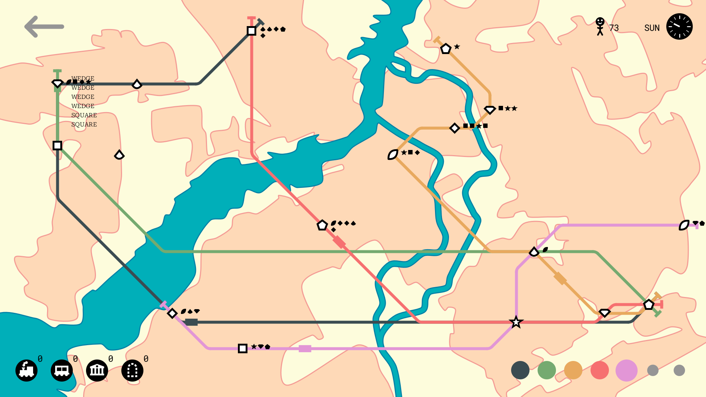
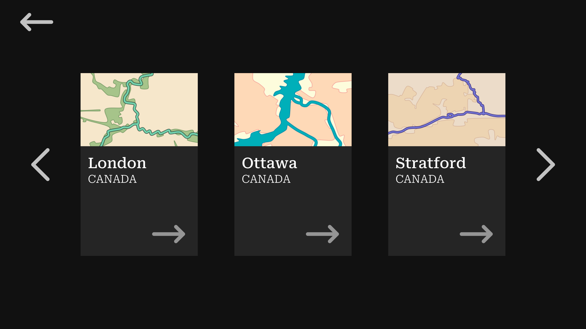
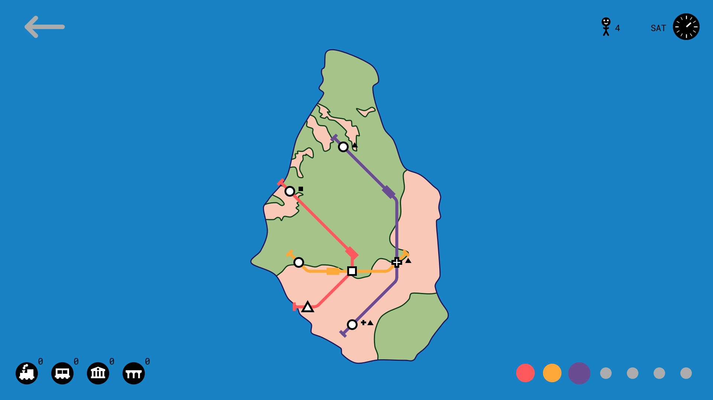
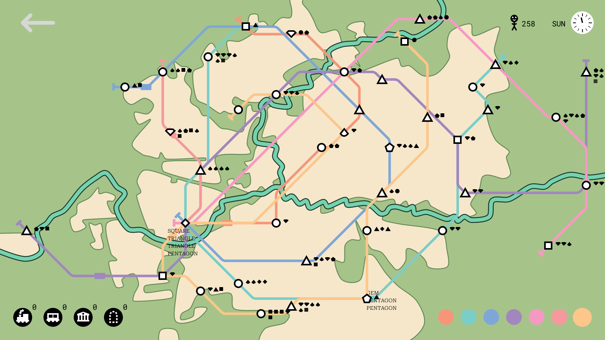
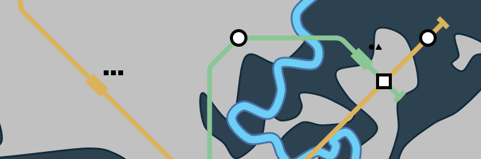
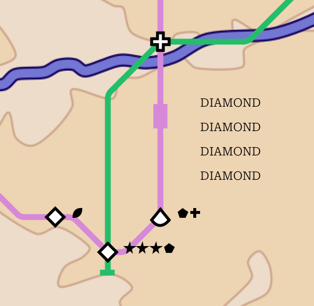
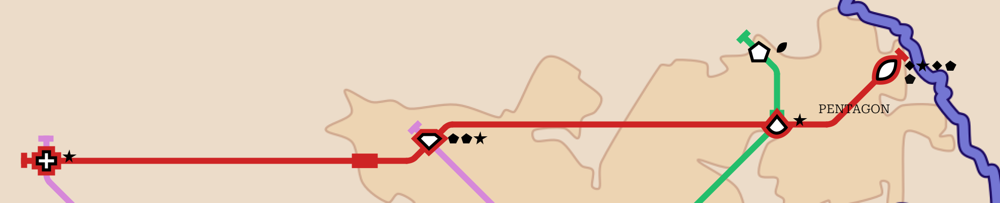
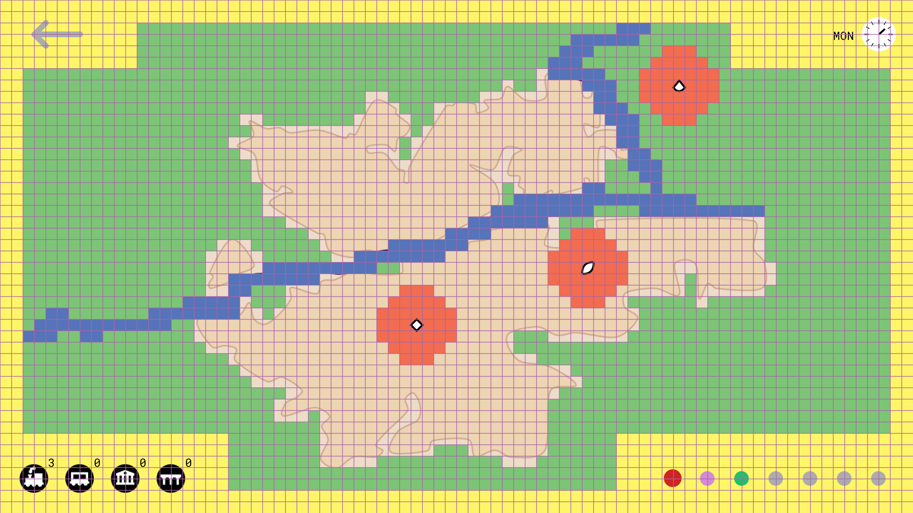

Small Subways
DOWNLOAD! (v4) (.jar)
GitHub
download Java
Mini Metro - the basis for this project

Small Subways requires at least Java 22 to run. If
you need to upgrade, you can download the latest Java release from the link at the top of this page.
Small Subways might not work on screens with aspect ratios other than 16:9.
Small Subways is based on Mini Metro by
Dinosaur Polo Club. Make sure to check it out! Mini Metro was originally called “Mind
the Gap” and was an entry to one of the Ludum Dare game jams. After being released on
Steam in 2015 it became quite popular.
Real Civil Engineer has some great YouTube videos of it. Now, in
typical pinniped.page fashion, I (with help) have copied it and changed the name very slightly.
The Menus
STUDIO TITLE — it looks pretty cool.
MAIN MENU — from here you can enter the level select or settings menu, open this webpage, or exit.
LEVEL SELECT — choose a map to play on.
SETTINGS — edit settings.
GAME — play the game.
GAME OVER — you lose, better luck next time.
The Maps
Elora & Fergus, Canada — two towns connected by river.
London, Canada — very average city, river forks in the centre.
Montserrat — fun fact: this island has nothing to do with the font by the same name.
Ottawa, Canada — capital city with a canal.
Stratford, Canada — note the loop of river in the centre.
Victoria, Canada — on the coast of an island.
Waterloo, Canada — really three cities.

level select
Totally different from Mini Metro, the maps are made of very curvy shapes. They’re just traced from Google Maps screenshots in
Affinity Designer. And the colours came from all over the place.

the Montserrat map with some lines and trains
The Game
Interface Explanation
Stations — stations (shapes) appear on the map, connect them with lines.
Passengers — passengers (small shapes) appear at stations, take them to a station that matches their type.
The Weekday Clock (top right) — shows day/night and the day of the week, at the end of each week you unlock a new line.
The Points Counter (left of the clock) — once you have at least one point, your total points will appear next to the “happy
passenger” icon.
Resources (bottom left) — shows how many of each resource you have available.
Currently, the resource bar only counts the number of (unused and therefore available) trains, which, because there is no way to get more trains
yet, is just the number of lines you have not used.
Lines (bottom right) — shows the colours of the lines you have unlocked and a bigger circle if the line consists of at least one station and/or
you have it selected.
Trains (on lines) — little rectangles that travel back and forth across lines carrying passengers (shown as tiny shapes next to the train)
where they want to go.

example of all the lines on the London map

trains now show passengers as shapes to the side
Shapes (Trains & Passengers)
- CIRCLE (50% spawn chance)
- TRIANGLE (25% spawn chance)
- SQUARE (11% spawn chance)
- STAR (5-point, 2% spawn chance)
- PENTAGON (2% spawn chance)
- GEM (a square rotated 45 degrees, 2% spawn chance)
- CROSS (looks like the addition symbol, 2% spawn chance)
- WEDGE (triangle with a round bottom edge—a bit like a raindrop, 2% spawn chance)
- DIAMOND (stereotypical, 2% spawn chance)
- OVAL (looks like a football, 2% spawn chance)
Gameplay & Controls
- Stations that aren’t connected to any lines are red and you should probably connect them
- Click on a line circle (bottom right) to edit that line
- Click on stations to connect them to the line (or disconnect them if they’re already attached)
- Right-click on stations to switch their diagonal state
-
A train is automatically placed at the beginning of the line then begins travelling along it
You cannot edit stations that are being accessed by a train, unless there are only two stations on the line.
-
When a train arrives at a station, it picks up all the passengers that have destinations in the same direction that the train is going.
Passengers do not know how to transfer yet and are currently shown beside the train. Most of the images show passengers as text beside
trains, but this has been improved.

-
At the same time, the train drops off all the passengers of that station’s type
If there are no passengers to pick up or deliver, the train skips the station, unless the station is at the end of a line.
- You get a point for each completed trip (passenger delivery)
-
If a station overcrowds (currently that means “has more than five waiting passengers”),
you lose
Additional Keyboard and Mouse Features
- You can press ENTER to skip the studio title screen
- You can press ESCAPE to exit the game while at the main menu
- In the level select menu, use the LEFT and RIGHT arrow keys to traverse the list of maps
- BACKSPACE always takes you to the previous menu
- You can scroll through unlocked lines
- You can select lines with numbers 1 to 7
- If you hover over a station it highlights that station and the rest of the line with your selected line’s colour.
-
If you hover over a line circle in the bottom right it highlights all the stations on the line

- While holding D, stations added to lines are drawn to diagonally first
- While holding S, stations added to lines are added to the start of the line instead of the end
- Press SPACE to toggle pause
- Press the UP or DOWN arrow keys to speed up or slow down simulation (speeds are 0x, 1x, and 2x)
-
Hold CONTROL to view debug information like grid square types
Yellow squares are margins and menu areas, blue squares are water, red squares are station margins, and green squares are
“country”. Stations can only spawn on “city” (transparent) and “country” (green) squares, and
there’s only a 1 in 10 chance for a station to spawn on a “country” square.

Possible Bugs...
If you encounter any of these problems, please report them on
GitHub.
- End-of-week event doesn’t trigger?
Updates/Versions
v1 — June 13th, 2024
v2 — June 14th, 2024
- New map: Montserrat
- Bug fix: the correct stations are always highlighted with the correct colour
v3 — June 15th, 2024
- Bug fix: the correct number of trains are shown in the resource bar after playing again
- Feature: stations that aren’t connected to any lines are red
v4 — June 16th, 2024
- Bug fix: stations added to the beginning of a line show that they are connected
LAST UPDATED: June 17th, 2024